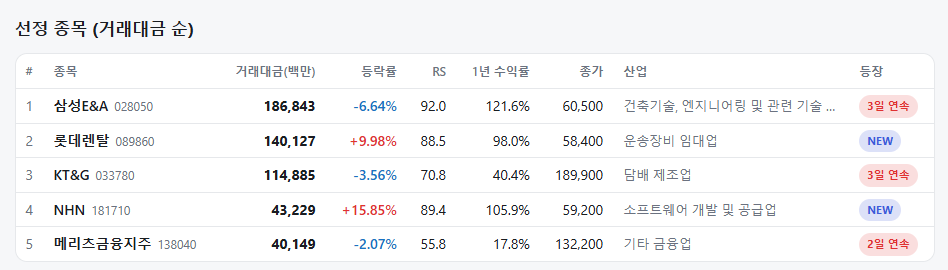
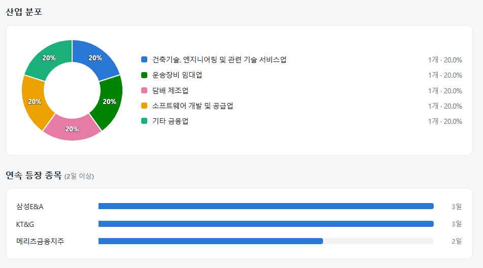
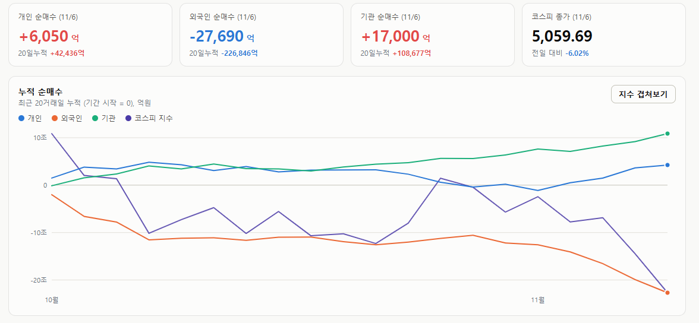

매일의 주도주 정리를 위해 기록합니다.
연속적으로 나온 종목들 또는 상승 후 조정받는 종목 위주로 리서치 해보시면 좋을 것 같습니다.


*오늘의 퀀트픽은 없습니다.
#주도섹터
미디어·엔터테인먼트 및 운송
주요 업종 및 종목: 미디어와엔터테인먼트(+1.15%), 운송(+0.74%), 도로와철도운송(+5.88%), 다각화된통신서비스(+2.87%), 양방향미디어와서비스(+1.92%), NAVER(+2.87%), 롯데렌탈(+9.98%).
분석: 시장 약세 속에서도 미디어와엔터테인먼트(+1.15%), 운송(+0.74%) 섹터가 견조한 흐름을 보였습니다. 대형주 중에서는 NAVER(+2.87%)가 양방향미디어 업종의 상승을 이끌었고, 렌탈 및 운송 관련주인 롯데렌탈(+9.98%)이 개별 강세를 나타냈습니다.
#조정섹터
반도체 및 핵심 IT 산업재
주요 업종 및 종목: IT(-7.71%), 반도체와반도체장비(-8.26%), 전기장비(-9.43%), 전자장비와기기(-7.62%), 우주항공과국방(-8.52%), 자본재(-6.00%), SK스퀘어(-10.51%), SK하이닉스(-10.44%), 삼성SDI(-8.06%), 삼성전기(-7.84%), 삼성전자(-6.35%).
분석: IT 대분류가 -7.71%의 큰 하락폭을 기록한 가운데, 세부적으로 반도체와반도체장비(-8.26%) 및 전기장비(-9.43%) 업종의 조정이 깊었습니다. SK하이닉스(-10.44%), SK스퀘어(-10.51%), 삼성전자(-6.35%) 등 시가총액 상위 반도체
#수급동향

코스피 지수는 -6.02% 하락한 5,059.69로 마감하며 5,100선을 하회했습니다. 코스닥 지수 역시 -5.03% 하락한 644.27을 기록하며 동반 약세를 보였습니다.
유가증권시장에서 외국인 투자자는 2조 7,686억 원(20일 누적 -22조 6,846억 원)을 순매도하며 매도 규모를 확대했습니다. 이에 대응하여 기관 투자자가 1조 7,000억 원(20일 누적 +10조 8,677억 원), 개인 투자자가 6,045억 원(20일 누적 +4조 2,436억 원)을 각각 순매수하며 시장의 매물을 소화했습니다.
AI 패닉: 시장은 2028년을 오늘 팔았다
올해 11번째 서킷브레이커입니다. 역대 17번 중 11번이 올해이고, 그중 8번의 배경이 반도체였습니다. 오늘은 개장 3분 만에 코스피가 5,000선 아래로 내려가 4,924.61(-8.52%)에서 거래가 멈췄고, 결국 코스피는 -6.02% 하락한 5,059.69로 장을 마감했습니다.
출발점은 어제 미국장입니다. S&P500 -4.36%(7,354, 7월 29일 이후 최저), 나스닥100 -6.36%(2020년 3월 이후 최대), SOX -12.25%(2020년 3월 16일 이후 최대), 마이크론 -17.46%, VIX 28.17(+69.7%). 중간선거 다음다음 날 기준으로 1896년 이후 가장 나쁜 하루였습니다.
① 2027년은 이미 짓고 있다, 흔들리는 것은 2028년이다
유안타증권 이재원 연구원님의 레포트를 인용했습니다. 미국 주요 20개 주에서 2027년 가동 예정인 데이터센터 33.8GW 중 약 75%는 이미 착공됐습니다. 규제에 노출된 것은 2028년 순증 62.2GW 중 아직 인허가 전인 최대 30.3GW(48.7%)이고, 이 숫자는 "취소"가 아니라 "노출"입니다. 텍사스가 2028년 미국 용량의 약 30%를 차지하니 그 주지사 선거가 2028년 숫자를 흔드는 것은 맞습니다. 다만 흔들리는 해가 2028년이지 2026년과 2027년이 아닙니다.
규제 요구가 초당파적이라는 점도 같은 방향입니다. 공화당 애벗 주지사는 8월에 474GW를 넘긴 전력 연결 신청의 전수조사를 지시하고 전력망 승인을 멈췄으며, 이어 환경 인허가도 중단했습니다. 민주당 당선인의 공약은 "주민 보호 법률이 마련될 때까지 신규 승인 중단"입니다.
② 반대편 증거를 하나씩 열어보면(마이크론·퀄컴·MS)
어제 하락을 "수요 둔화의 증거가 쌓였다"로 읽는 쪽이 드는 사례가 셋입니다. 열어보면 방향이 다릅니다.
마이크론 대만 공장 중단. 블룸버그 보도대로 타오위안 Fab 11E(45억 달러) 공사가 사실상 멈춘 것은 맞습니다. 이유는 노조가 글로벌 영업이익의 15%를 현금 보너스로 요구한 노동 분쟁이고, 이 팹은 2028년에야 생산을 시작할 예정이었습니다. 2026년 매출에 기여할 물량이 아닙니다. 마이크론은 "대만 운영은 정상"이라며 중단 자체를 확인하지 않았습니다. 2028년 공급 팹이 늦어지는 것은 2028년 공급 제약을 늘리는 쪽이지, 수요가 줄었다는 증거가 아닙니다.
퀄컴 가이던스. 1분기 매출 가이던스 104~112억 달러는 컨센서스 104.8억을 넘었고, EPS만 소폭 밑돌았습니다. 마진이 24%에서 20~22%로 내려온 이유는 웨이퍼·패키징·메모리 비용 상승이고, 아몬 CEO의 말은 "수요 문제가 아니라 공급 문제"였습니다. 메모리 구매자가 비용에 눌리는 상황은 메모리 공급자에게 나쁜 뉴스가 아닙니다.
마이크로소프트의 네오클라우드 재검토. 이것은 실제 축소입니다. 영국 Nscale 30억 달러 계약 취소(전력 확보 지연), 텍사스 확장 거절, 웨스트버지니아 1.35GW 임차 의향서 철회, 아이렌은 일정을 재협상해 텍사스 사이트가 수주~수개월 늦어질 수 있습니다. 다만 이것은 제3자 임대의 선별이지 캐펙스 총액의 축소가 아닙니다. 마이크로소프트는 지난 1년간 2,000억 달러 넘는 데이터센터 임대를 약정했고, 돈을 자체 시설로 돌리는 중입니다. 네오클라우드 주식(아이렌·네비우스 -20%)에는 나쁜 뉴스지만, 메모리 주문의 주체가 바뀌는 것이지 사라지는 것은 아닙니다.
세 사례의 공통점은 “2028년의 문제”거나 "누가 짓느냐의 문제"라는 것입니다. 어제 시장은 그것을 2026년 실적의 문제로 가격에 넣었습니다.
③ 항복의 숫자 (풋/콜·거래량·백워데이션)
하락의 질도 패닉에 가깝습니다. S&P500 하락 종목 429개 대 상승 73개, NYSE 상승 거래량 비중 16.3%(Bluekurtic 집계로는 S&P 하락 거래량 비중 91%, 올해 최고). 주식 풋/콜 1.05로 4월 관세 충격 때보다 높고, VIX가 모든 선물 계약 위로 올라간 백워데이션입니다. 개인은 하루 3.58억 달러를 순매도해 2020년 3월 17일 이후 최대였고, CTA 주식 포지션은 3월 이후 최저입니다.
골드만삭스의 진단은 헤지펀드의 AI 집중 노출과 레버리지 축소, 옵션 매도가 겹쳐 낙폭이 증폭됐다는 것입니다. 노무라의 매켈리고트는 "장군들을 쏘고 있다"고 했습니다. 올해 수익을 낸 종목부터 파는 행동입니다.
이 숫자들은 "반등이 가깝다"를 말하지 "바닥이다"를 말하지 않습니다. 10월 14일에 썼듯이 극단 수치 이후 며칠 안의 반등 확률은 높지만, 7월처럼 L자로 바닥을 다진 사례도 있습니다. 어제 마감 후 시간외에서 나스닥 선물 +1% 안팎, 마이크론 +5.5%, AMD +5%가 나왔지만 정규장은 아직 열리지 않았습니다.
④ 한국은 무엇을 더 반영했나
어제 코스피 -5.3% 중 반도체 기여가 -4.6%p였고 나머지 전 업종 합계는 -0.7%p였습니다. 외국인 3.4조 매도 중 2.7조가 반도체였습니다. 오늘도 삼성전자 -6.35%, SK하이닉스 -10.44%로 하락의 중심은 같습니다. 11월 4일 종가 기준 반도체 선행 PER 2.71배, PBR 1.28배였으니 이틀 더 내린 지금은 그보다 낮습니다.
여기서 더 반영하려면 “2028년 지연”이 "계약 취소"로 바뀌어야 합니다. SK하이닉스는 2029년까지 DRAM·HBM 구매자를 사실상 확보했고, 장기계약에는 예치금이 걸려 있습니다.
어제 미국과 오늘 한국은 아직 일어나지 않은 2028년의 투자 축소를 오늘의 실적 훼손으로 번역해 매도했습니다. 2027년 데이터센터의 75%는 이미 짓고 있고, 2028년 노출분은 '취소'가 아니라 '노출'이며, 마이크론·퀄컴·마이크로소프트의 뉴스는 열어보면 수요가 아니라 노조·비용·임대 상대의 이야기입니다. 그래서 투매에 동참할 자리는 아닙니다. 바닥이라고 말하지 않는 이유는, 확인할 숫자가 아직 안 나왔기 때문입니다. 하이퍼스케일러의 내년 캐펙스 가이던스, 2028년 컨센서스의 하향 여부, 외국인 매도의 진정. 그 셋이 나오기 전까지 오늘의 가격은 규제의 가격도 실적의 가격도 아닌, 레버리지가 풀리는 가격입니다.
어려운장인데 모두 힘내시길 바라겠습니다.
평안한 주말 보내세요.